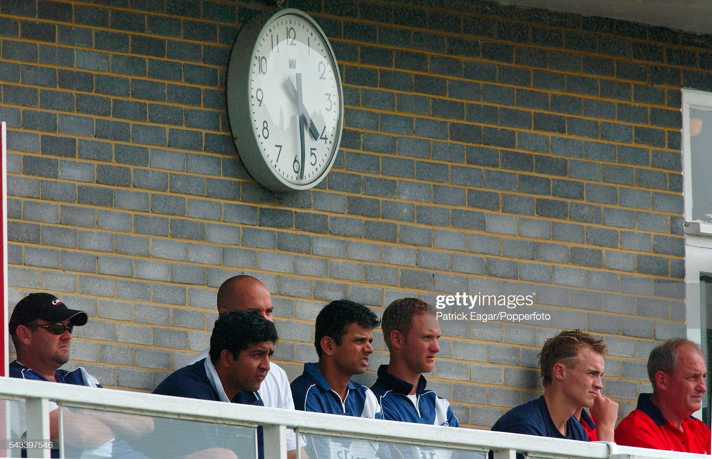

Mr Mitre - Bill Polson: A life in Scottish cricket
The fascinating story of how a cricket club became synonymous with one man

Rahul Dravid: future head coach of India, and Scotland's best ever
Craig Wright captained the Indian legend, and saw firsthand why many see him as Ravi Shastri's obvious successor

Cricket's quest to break down barriers
There is a conscious drive in Scotland to modernise the sport and make it more acccessible